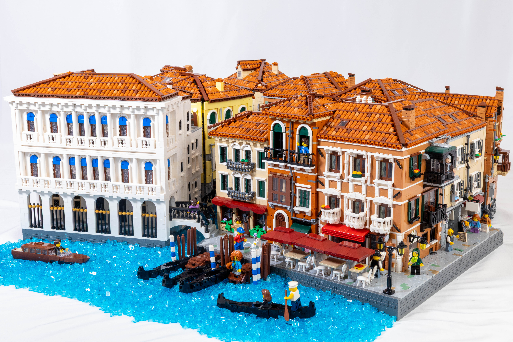

水の都 ヴェネツィア
Venice
駒場祭
11/21~11/23 2025

イタリア北部に浮かぶ水の都
かつて地中海貿易によって栄え、1000年以上続いたヴェネツィア共和国。ゴンドラで行き来するための運河が張り巡らされた街並みは息を呑む美しさです。
50,800 ピース。4人の合作。
制作：mol・autumn・tsuki・maru
スケール：ミニフィグスケール (約1/40)
全長：93.5 cm
全幅： 89.9 cm
全高： 33.0 cm
設計：500時間
組立：500時間
スケール：ミニフィグスケール (約1/40)
全長：93.5 cm
全幅： 89.9 cm
全高： 33.0 cm
設計：500時間
組立：500時間
実物大でどうぞ。

あしあと。
2025
6月
テーマの検討開始・ヴェネツィアに決定。
2019
6月
7月
9月
10月
11月
7月
9月
10月
11月
テーマをヴェネツィアに決定。ラフ案作成。
設計開始
設計完了
組み立て開始
組み立て完了
第一回撮影会
第76回 駒場祭 展示（東大レゴ部ブース
第二回撮影会
設計開始
設計完了
組み立て開始
組み立て完了
第一回撮影会
第76回 駒場祭 展示（東大レゴ部ブース
第二回撮影会
2026
1月
3月
3月
艦船オフ9 展示
レゴ部ユニオン 展示予定
レゴ部ユニオン 展示予定
【新作公開！】
— mol (@mol_lego) November 21, 2025
レゴで水の都・ヴェネツィアを作りました！
運河が張り巡らされた美しい街並みを再現しています
延べ1000時間をかけた、5万ピースの超大作です！@mol_lego @autumn_765 @tsuki_lego @maru__nd の4人で制作しました
11/22~24の駒場祭で展示します
ぜひお越しください！ pic.twitter.com/qPKD2z7uAd
順路はこちらです。